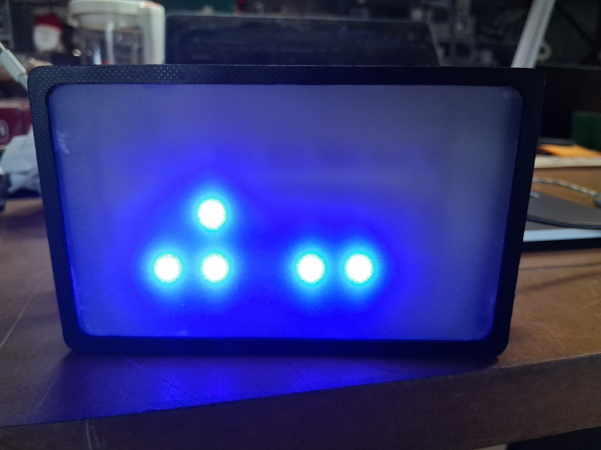
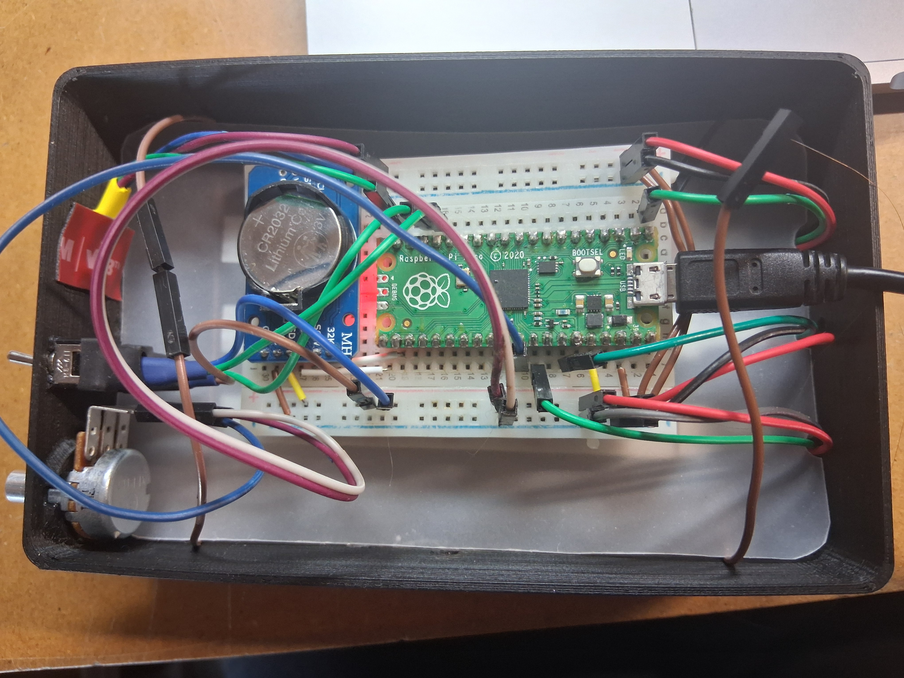

Bituhr
This clock is showing the time separated by second, minute and hour in binary. For each there is a horizontal LED Strip with six Neopixel. On the right side are the controls for the clock, in order to enable custom or automatic mode. I already finished the prototype which is working well, but I would like to refine it with a custom PCB and a rework of the 3D printed case.

FILE: bituhr_display.jpg
TYPE: JPG
TYPE: JPG

FILE: bituhr_electronics.jpg
TYPE: JPG
TYPE: JPG